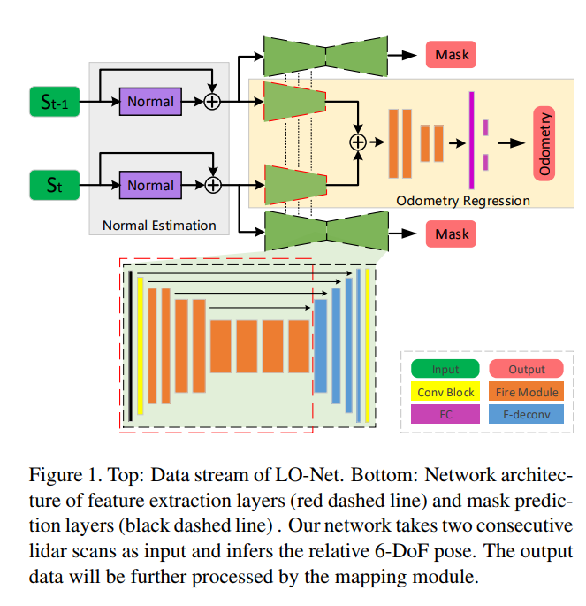
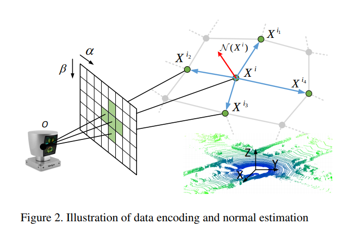

LO-Net: Deep Real-time Lidar Odometry
这篇文章主要有三个贡献，第一提出了scan-to-scan lidar odometry网络，同时估计面的法向以及mask for dynamic regions。第二融合相邻两帧网络进行估计，第三，融合一个mapping module. 注意Github 链接代码尚未公布。
网络主要结构

整体来说，网络由三个网络构成，分别是法向估计网络(point wise)，mask 估计网络以及一个共用参数的双生姿态回归主网路。它以两个相邻的lidar点作为输入，估计出6自由度的相对运动、点云各点的面法向以及动态区域mask。odometry的输出会通过mapping模块进一步提高，最终的输出会是相对于初始位置的偏移
输入编码
为了让网络的数据编排变得紧凑，这里使用圆柱坐标系
如果同一个坐标有不止一个点，则以最近的点为准，每一个点的特征包括强度值以及距离值。

几何约束
法向估计
严谨来说，以上图为例子，点云的法向应该由点以及其个相邻的点，由下式定义
也就是寻找一个矢量，使得这个矢量与k个相邻点矢量的点乘的加权求和值(或者是加权范数)最小.一般来说距离越近权重越大，距离越远权重越小。
本文为了简化这一计算，使用以下方程
其中为当前点的临近点。
相邻两簇点云之间有一定的对应关系，令为投影过程而为相对位移，可以找到点的对应点
由于相对应的点法向估计理应比较相似，所以一个约束是
其中 是距离关于的微分，意思是变化越剧烈的地方越重要
里程回归
这里让网络在完全连接层输出7个数值，前三个是平移向量，后面四个是四元数。大部分网络层使用的是fireConv
由于点云的特性，feature map的高度远小于宽度(360°点云)，所以在下采样的时候只对宽度进行max pooling
在学习时由于旋转与平移的单位不同，同时为了避免调节超参，使用自动学习的参数(个人注解:尽管公式不同，引用的文章也不一致，但是基本可以确认理论本质来自于multi-loss)
Mask估计
输出的mask会影响到几何约束的cost function，被改造为
注意到由于mask prediction没有ground truth 所以将所有mask设置为0可以让cost变得最小，所以附加以下的cost，目标是让网络能够权衡。
Mapping refinement

表示的是对法向估计的一个预设的卷积，中央为-14.其他值为1，是一个高通滤波器。feature map上值最小的个mask外的点选出来，认为是平面区域。
指的是计算lidar pose的先验计算(假设上一时刻转换矩阵不变)
首先利用网络预测的两帧间位移线性插值补偿运动畸变，然后用将新的点云转移到世界坐标系下。
假设是当前scan的点，是对应点，而是对应点的法向。全局mapping的目标就是要找到一个最优的使得
:迭代地求解上文提到的方程，
根据优化后的位移结果生成最终的点云结果。
将新的点云加到地图中，然后清除最旧的点云，只保存最旧的个点云